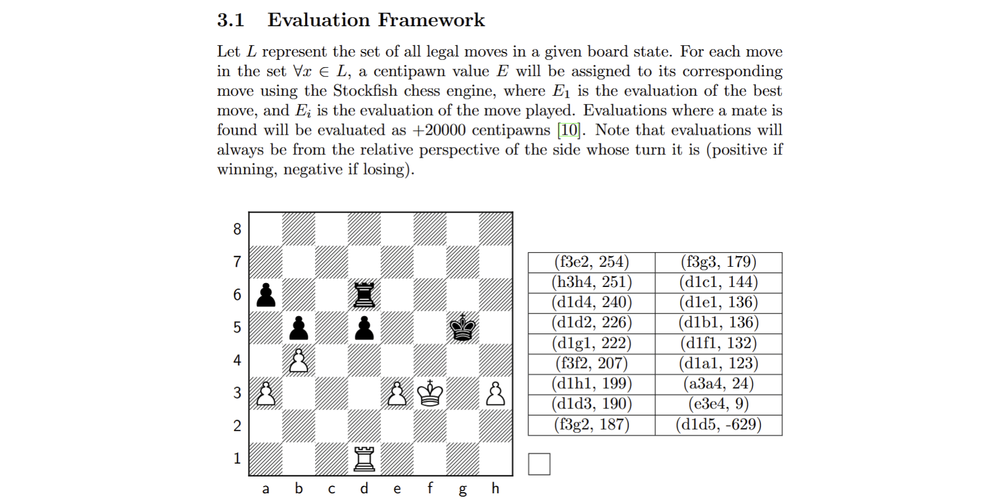

Greene, C. J. (2026). Quantifying the Degradation of Human Decision-Making Under Time Pressure Through the Self-Information of Chess

Tools Used
Abstract
Though it is well established that time pressure has detrimental effects on human cognition, its relative effects across different levels of competency remain largely unquantified. To address this gap, we extend Claude Shannon's work in information theory to the game of chess. To quantify the quality of human decision-making in a chess game, we calculate the probability of all legal moves in a given position from engine evaluations using a softmax function. Then, we sum the Shannon information of each played move in a single game to obtain the game's total surprisal. By applying this framework to a large dataset of 22,500 chess games from the lichess.org Open Database, our results show that time pressure does not affect individuals of different skill levels uniformly. Highly skilled players effectively utilize additional time to improve decision quality, decreasing surprisal, whereas less skilled players exhibit poor baseline decision quality, high surprisal, which does not improve with additional time. These findings highlight the importance of distinguishing between skill-based and time-based limiting factors in any cognitive performance-based context, such as timed test-taking.
PGN Database Extractor
Engineered an optimized PGN database extractor in Go to parse a 29.9GB database containing 91,549,148 chess games, sorting them into separate CSV files based on time control and skill group, while filtering games by ply (game length) and Elo difference.
Chess Surprisal
Developed a Python program to calculate the surprisal of 22,500 chess games using a custom softmax function to create probability distributions of all legal chess moves in each position from Stockfish 17.1 (Linux x64, AVX2) chess engine evaluations, finally implementing Claude Shannon’s theory of information to quantify move surprisal in bits.
Mathematical Framework
A softmax function calculates the probability of a move from a set of all legal moves $L$ in a position, where $E_i$ is the evaluation $E$ of the played move, and $E_x$ is the evaluation $E$ of the move $x$ in the set $L$.
The total surprisal $C$ of a game can be expressed as the summation of the self-information of each move, where the upper limit $n$ represents the total number of plies in the game, such that:
To calculate the average surprisal $\bar{C}$ per move across all games in a given time control, let $N$ represent the total number of games, $C_i$ represent the total information of game $i$, and $n_i$ represent the total number of plies in game $i$. The average surprisal per move is then: